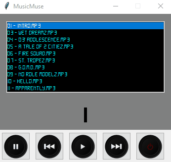

MusicMuse
MusicMuse is a simple mp3 player, designed to make navigating music in a custom made playlist, easier.
Key Features
- Play and pause your music
- Navigate through your music playlist
- Go forward and backward between tracks



About MusicMuse
MusicMuse is a project inspired by a deep love for music and the journey of self-discovery through code. As a solo project, It was conceived during my time at Holberton School. as an avid music lover, I found that streaming music was getting a lot more distracting, especially during studies. Hence i decided to make a user-friendly music player that allows one to load music they love and listen without any interferance.
MusicMuse is not just a project; it's a testament to personal growth, creativity, and the desire to share the joy of music with the world. The project embodies the essence of simplicity and user-friendliness, offering an intuitive music listening experience.
Connect with Jeremiah Martey on LinkedIn and GitHub
Get Started
Ready to start using MusicMuse? Download it now and enjoy your music journey!
Download Now